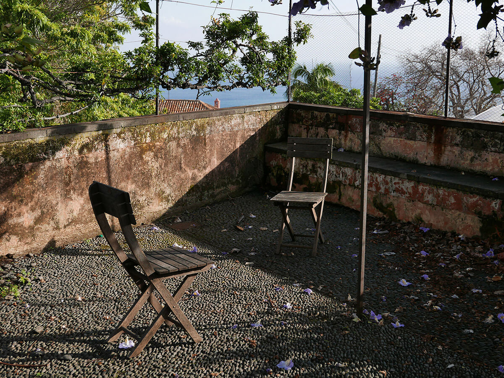
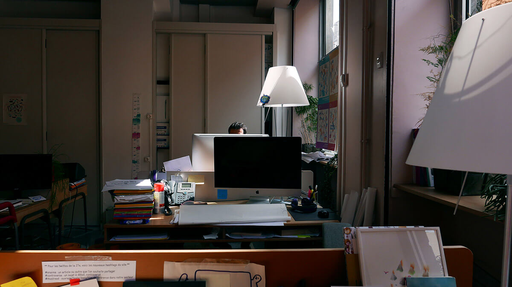

Watch
This interactive documentary lasts 50 minutes, do you want to use your time to watch Ethics for Design?
If your network is unstable, or if you want to spare your mobile data, you can watch (or download) the non-interactive version here.
Ethics for Design
12 designers and researchers from 8 European cities discuss the impact, sometimes harmful, of design on our societies and the paths to follow for designers to work for the good of all and not just a few.
Watch the documentary here. Ethics for Design was meant to be interactive but the experience on smartphone would have been impractical. You can also consult the “About” and “informations” sections below to get to know the project.
About
- Why?
-

Every day we use objects, services and applications designed by all kinds of designers. But does this mean that everything a designer conceives is done in our interest? Some interfaces are designed to get all of our attention and some products are designed to die prematurely. With this in mind, it becomes obvious that the design of any product can be a moral dilemma: designers must balance their own economic survival, the financial interest of the client and the well-being of the user.
These dilemmas are a constant for designers and it is essential to create a space for reflection and to define an orientation for the profession which is currently incredibly sparse, i.e. to define an ethical code for design.
It’s out of the question to leave the present and future generations of designers indifferent to the impact of their profession and to the value of their responsibility. That’s why we have made this documentary. The question of ethics must be raised now if we want designers to gain autonomy and relevance in the face of the real stakes of our societies.
Ethics is a permanent questioning of what is desirable for the good of all and it is unthinkable that designers do not take their part in this questioning.For more information about the documentary please use this address: contact@ethicsfordesign.com.
- Go forward
-
Here are some links, recommendations and documents to continue your personal thought on ethics:
- Code of Ethics for professional designer by the French Design Alliance (EN)
- Time Well Spent initiative (EN)
- Design for the real world by Victor Papanek (EN)
- Ethical Design Manifesto by Indie Team (EN)
- Data Permission Catalogue by IF (EN)
- A Designer’s Code of Ethics by Mike Monteiro (EN)
- Ethics for Design’s medium (EN)
- Interviewees
-

- Alain Findeli
-
Engineer by training, Alain Findeli has turned his attention to design by questioning the human and social aspects of engineering. He has produced a substantial piece of research on the teaching of design (The Bauhaus of Chicago: the educational work of László Moholy-Nagy). He has been part of the Ethics Research Center of Montreal University and lastly co-founded the MA Design-Innovation-Society at Nimes University. Alain also co-founded the social innovation by design research team PROJEKT.
projekt.unimes.fr/membres/alain-findeli montreal2015.les-ard.org/speaker/alain-findeli - James Auger
-
James Auger was among the first designers to question the role of the designer and the impact of design products (Tooth implant, J.Loizeau and J.Auger). He was then professor at the Royal College of Art in the famous Interactions Design section alongside Fiona Raby and Anthony Dunne. Since 2015, James has devoted himself to his research projects at the Madeira Institute of Technology and writes regularly with Julian Hanna on modern design issues (Crap Futures).
auger-loizeau.com crapfutures.tumblr.com - Peter Bil’ak
-
Famous type designer to whom we owe the Fedra or FF Eureka Peter Bil’ak Typotheque, Peter has directed his graphic design studio and foundry for 18 years. He was co-editor of the magazine Dot dot dot and created Works That Work. After a trip to India in 2005, he decided to partner with Satya Rajpurohit, an Indian designer, to create Indian Type Foundry in 2009. He also recently participated in the creation of the font rental software FontStand.
typotheque.com worksthatwork.com - Antoine Fenoglio
-
For the last 20 years Antoine Fenoglio has been running the design studio Sismo with his partner, Frédéric Lecourt. The studio’s work, always elusive, can pan from industrial design projects to exhibition commissions. Antoine has designed more than twenty products of daily life and has spent a long time working to make design comprehensible for the general public. He was made Knight of Arts and Letters in 2013.
sismodesign.com - Flora Fischer
-
Flora Fischer is PhD candidate in philosophy at the University of Technology of Compiègne and in charge of research program at the Cigref (Club Informatique des Grandes Entreprises Françaises). Flora works on an ethical approach to the design of digital services and products, an ethics by design, especially in large companies. Her work also addresses the research field of machine ethics and the deontology of the designer.
cigref.fr - Sarah Gold
-
Sarah Gold created IF to address the issues of transparency, security, privacy and open source in digital services design, especially in the public domain. She is a member of the Expert Council of the Cyber Security Research Institute. Sarah was also listed on Forbes’ 30 under 30 and as a Nesta New Radical.
projectsbyif.com - James Williams
-
James Williams is the co-founder of the Time Well Spent movement with Tristan Harris. He is also a doctoral student at the University of Oxford (Oxford Internet Institute) where he wrote his thesis on the ethics of attention. Before that James worked at Google for over ten years and received the Founder’s Award, the highest award within the company.
oii.ox.ac.uk/people/james-williams timewellspent.io - Geoffrey Dorne
-
After being an independent designer and researcher at EnsadLab, Geoffrey Dorne created his own ethical design agency Design & Human, which works mainly with NGOs, companies and associations. Geoffrey pays particular attention to user-centered methods and respectful approaches to human well-being.
designandhuman.com - Thomas Schnur
-
Trained as a cabinetmaker and later as a product designer, Thomas Schnur went through Mathieu Lehanneur’s studio in Paris and studied at the Saint-Étienne School of Design. He has been nominated several times for the German Design Award and Designpreis der Bundesrepublik Deutschland. Through his research Thomas has explored the design of common objects and their dissemination in different types of cultures and societies.
thomasschnur.com - Matthieu Cherubini
-
After studying nursing and computer engineering, Matthieu studied interaction design at the Royal College of Art. He started a PhD on ethics algorithms by asking the question: Can Ethics be computable? His speculative design work on healthcare or autonomous vehicles is known internationally. He now works in Shanghai as a design technologist.
mchrbn.net - Laura Pandelle
-
Trained at the Ensci in product design, Laura now works on public policy innovation in the association La 27e Région. As a designer she coordinates the field experiments and develops the methods of the association. Laura specializes in the fields of innovation through service and social innovation.
la27eregion.fr - Nicolas Nova
-
Nicolas Nova is an associate professor at the school of Art and Design (Head) in Geneva and is also part of the research agency the Near Future Laboratory. His research interests are in the fields of ethnography, interaction design and futures research. Nicolas documents and studies digital and new media practices.
nearfuturelaboratory.com nicolasnova.net
- Code & Medium
-
All the development that Sylvain Julé made for the website and the player is open-source and available here.
All the full interviews and photos made for the documentary will soon be available here.
If you want to translate the documentary’s subtitles in your own language, the roadmap is to be found here. Once we’ve received your subtitles version we’ll check for mistakes and then integrate it into the player.
 This work is licensed under a Creative Commons Attribution-NonCommercial 4.0 International License.
This work is licensed under a Creative Commons Attribution-NonCommercial 4.0 International License. - Budget
-
This documentary was produced entirely with 5402€ for 6 months. You can find the detailed budget here as an indication. It is not representative of the real wages for the work provided by the persons of the team, who chose to be paid less, or even not at all, in order to make the documentary happen.
We hope that access to the documentary budget will help those who want to get involved by giving an idea of how to budget for this type of project.
Moreover, as supporters of transparency, it seems important that all the figures are accessible so that you can better understand the conditions in which this documentary was produced.
Informations
- Credits
-
- Sylvain Julé
-
Technical direction and web developmentsylvain-jule.fr
- Clément Le Tulle-Neyret
-
Art direction and graphic designclement-ltn.com
- Gauthier Roussilhe
-
Direction, production and motion designgauthierroussilhe.com
- Miroslav Pilon
-
Sound post-production and mixmiroslav-pilon.com
- Victoria Stephens
-
Voiceover
- Elise Leclerc
-
Translation
- Sébastien Robert
-
music curationsebastienrobert.nl
- Typeface
-
Neue Haas Grotesk (Christian Schwartz & Jack Curry, Commercial Type, 2010 & 2016)
- Music
-
S.A.M., Baby I’m Sorry, Alone In A Crowd, Two Hearts In Doubt, Dream State Of A Bellmaker, 2017; DJ Sports, Phases Of Winds, The Secret Jog Life, Phases Of Winds, 2016; Trux, Aziol, Trux, 2016
- Contact
-
If you wish to broadcast the documentary in your school, your company or just want to send us your thoughts, please contact us at contact@ethicsfordesign.com.
- Acknowledgements
-
We would like to thank all the participants of this documentary who gave the time of an interview and sometimes even the time for a meal : Béatrice Gisclard, Alain Findeli, James Auger, Peter Bil’ak, Daniel Schwarz, Antoine Fenoglio, Flora Fischer, Sarah Gold, James William, Geoffrey Dorne, Thomas Schnur, Mathieu Cherubini, Laura Pandelle, Julien Defait and Nicolas Nova.
Thanks also to everyone who welcomed the team during the shoot and who provided their advice : Giulia Orgeas, Julian Hanna, Enrique Encinas, Danielle Boelling, Sébastien Robert, Marianne Clavel, Thomas Skowronski, Lucile Vidaud, Gandalf de Meaupou D’Ableiges de Monbail, Marine Schepens, Alexis Ozouf, Ronja Müller, Roman Maria, Bernard Magri, Victoria Stephens, Flore Leclerc, Nicole Felipe, Yann Alary, Clément Renaud, Amaury Poudray, Loïc Marszalek et Laurent Bigarella.
- Video credits
-
- Audio Tooth Implant on Sky News, Auger and Loizeau at the Science Museum in London
- Madeira Cliff Lift, alessevera
- Résidence / L’accès aux administrations de proximité, SGMAP, La 27e Région and Marguerite Fouletier (Les Beaux Yeux agency)
- Limits to Growth, United Nations Television and New York State Education Department
- Works that Work magazine/process, Lukas Timulak and Typotheque
- Social Distribution (Works That Work magazine), Thibault de Fournas and Christopher Van Wilson
- Refugeye, Links not Bombs
- Ethical Autonomous Vehicles, Matthieu Cherubini
- Tesla Model S P85D Autopilot Demonstration, HighTechJoe
- Passengers, Casino, 1982
- Group of business people using laptop and tablet computer during a meeting, Shutterstock Free Sample
- The Talkative Cat, Matthew Paul Argall
- Modern Times, Charlie Chaplin, 1936
- Alexa CIA, Alexa CIA
- Partners
- Legal mentions
-
Editorial manager: Gauthier Roussilhe
Address: 62 Wood’s Rd, SE15 2SW London
Email: contact@ethicsfordesign.com
Website: ethicsfordesign.comHosting: Linode
Address: 329 E. Jimmie Leeds Rd, Ste. A Galloway, NJ 08205
Website: linode.comWeb development: Sylvain Julé
Website: sylvain-jule.fr